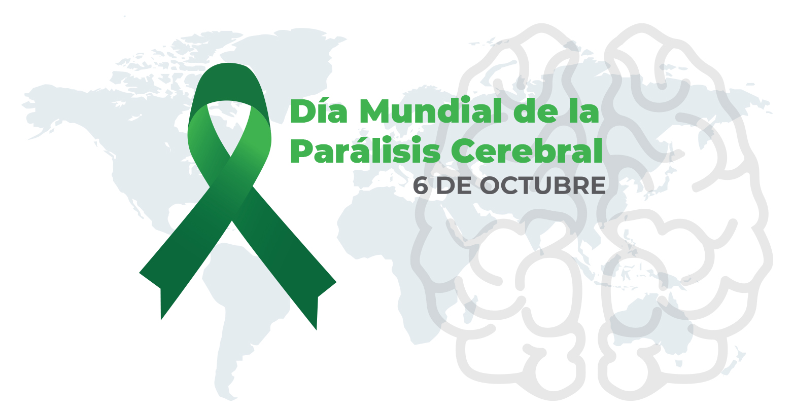

6 de OctubreConmemoración: Día Mundial de la Parálisis Cerebral
Alcance: Nivel Nacional
en el Día Mundial de la Parálisis Cerebral, rendimos homenaje a todas las mamás que, con amor y valentía, acompañan a sus hijos en cada paso de su camino.